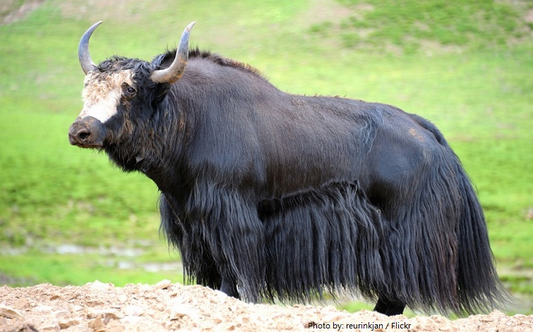

Yonkers
Yonkers Yak
Yellow
Description about Mascot
Yonkers is a city in Westchester County, New York, United States. Developed along the Hudson River, it is the third most populous city in the state of New York, after New York City and Buffalo.
Three fun facts about Mascot:
- Yonkers's downtown is centered on a plaza known as Getty Square, where the municipal government is located. The downtown area also houses significant local businesses and nonprofit organizations.
- Yaks live at the highest altitude of any mammal.
- Yaks have firm, dense horns which they use to break through snow in order to get the plants that are buried underneath.
index link